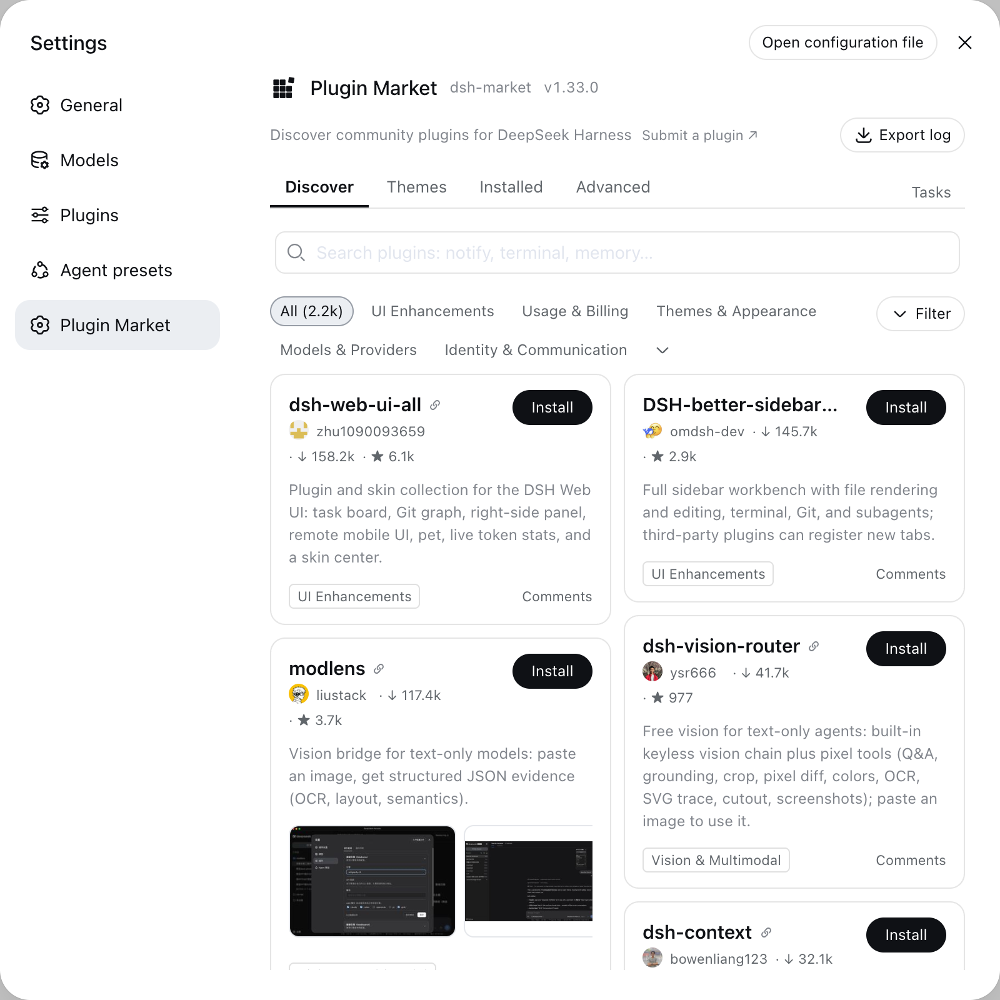

Browse and search __COUNT__ community plugins, install with one click — most go live without even a restart. Updates, uninstall, live install progress. No telemetry, ever.
dsh plugin --profile web add dshmarketdsh web → Plugins → Plugin Market tab (dsh 0.2.1+; Settings → Plugin Market on older hosts). That's the whole setup.
This catalog is also a plugin market index. On dsh 0.2.1+, open Plugins → Discover → Index sources and add
https://cdn.jsdelivr.net/npm/dsh-plugin-catalog/index.json — the list as a format-1 index, served from npm so it loads quickly
everywhere (the GitHub Pages copies at awesome-dsh-plugin.com/index.json and dshmarket.com/index.json are the same document).
The Discover tab and the plugin_market agent tool then search the same plugins.

The full curated catalog from awesome-dsh-plugin — categories, star counts, top/new sorting, bilingual descriptions.
npm tarballs are preferred over full-repo GitHub downloads whenever a plugin publishes to npm — typically seconds.
Most plugins are live right after a page refresh. Updates and uninstalls take one click too — the market even updates itself.
Missing a component? The market detects it and fixes it with one button. You never see a terminal.
Installs are restricted to the curated registry, build scripts stay blocked by default, and terminal-surface plugins are flagged before you install them.
The market never phones home. Even the bug-report log export is sanitized and stays on your machine until you share it.
An extension that adds something to dsh: a different interface, another model, a new tool, access from your phone. Uninstall it any time.
Install this market first (the command above), then press Install in the market. To install from a terminal, or when an install fails, see the install guide.
The market and the list are free and open source (MIT). Plugins are published by their authors; check each plugin's own page for whether it charges.
Most plugins are live after a page reload; a few need one restart of dsh web. If the plugin shows up under Settings → Plugins, it installed.